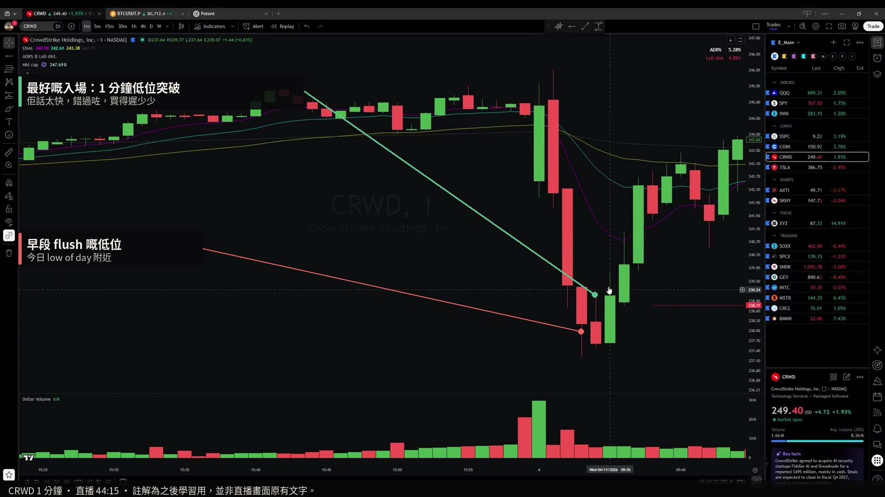
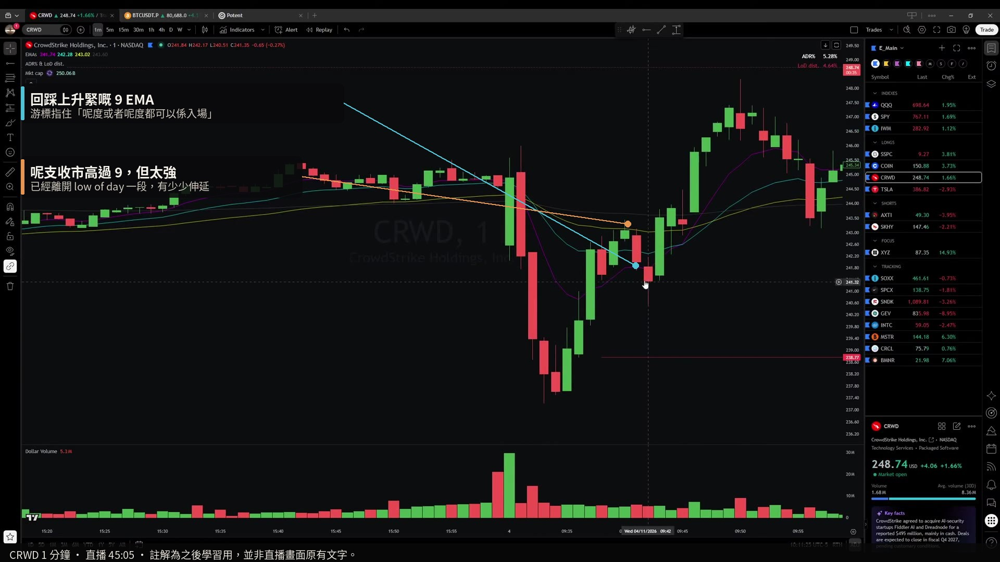

概要
自己都覺得買得遲少少
觀眾問點解 Crowd 未見任何週期最終支持都買。佢話自己其實買得遲少少：最好嘅入場係 1 分鐘低位突破，但太快，錯過咗。如果錯過第一次，多數會等 1 分鐘收市高過 9 EMA；但呢支收市太強，已經離開 low of day 一段。然後就等回踩上升緊嘅 9 EMA——游標指住「呢度，或者呢度都可以係入場」。佢鍾意呢段 undercut 再 rally，並話價錢 undercutting 50 EMA 之後而家彈返上。
圖一
CRWD 1 分鐘：最好嘅入場係低位突破，但太快
直播 44:15

原話
Honestly I'm buying a little bit too late. I think the best entry is definitely the one minute breakouts down here, but yeah it's just too fast and I just missed it.
老實說我買得遲少少。我覺得最好嘅入場肯定係呢度下面嘅 1 分鐘突破，但係太快，我錯過咗。
點樣讀
圖上標咗早段 flush 嘅 low of day，同隨後第一輪向上突破。呢句重點係「最好嘅位置已經錯過」，唔好把後嚟嘅入場讀成最理想點。
畫面仍然睇唔到成交價，所以唔寫死佢實際買喺邊度。
圖二 · 主圖
錯過之後：等收市高過 9，再等回踩
直播 45:05

原話
Most of the time, if I miss the first, like the one minute breakout entry point, then maybe I will wait for one minute close above the 9 EMA. And then this close is too strong, it's already a little bit extended from the low of day. And then I just wait for the pullback into the rising 9 EMA. So actually maybe like in here or maybe even here, I think this could be also an entry. And I just like this undercutting rally on the Crowd. I know it's undercutting the 50 EMA and now it's rallying back.
多數時候，如果我錯過第一次、即係嗰個 1 分鐘突破入場，之後或者會等 1 分鐘收市高過 9 EMA。但呢支收市太強，已經離開今日低位一段，有少少伸延。然後我就等回踩上升緊嘅 9 EMA。所以其實或者呢度，甚至呢度，我覺得都可以係一個入場。我只係鍾意 Crowd 呢段 undercut 再 rally。我知佢 undercutting 50 EMA，而家彈返上。
點樣讀
游標喺回踩上升均線嘅位置。原話「maybe like in here or maybe even here」係兩個相近嘅回踩位置，註解指住游標所在；另一個「甚至呢度」只係口頭補充，唔好把附近每支 K 都寫成已經確認嘅入場點。
「呢支收市太強」係指第一輪突破入面、已經離開 low of day 嘅那支強勢收市，之後先至等回踩。如果覺得註解點同你睇嘅那支不完全重疊，請切返原畫面核對。
「undercutting the 50 EMA」要對返科目九嘅日線：低位曾經低過黃線後收回。Whisper v2 呢句聽到 15 EMA，YouTube 同日線都支持 50 EMA，本頁用 50。
附註
注意事項
- 圖上中文註解係之後加上嘅學習說明，唔係直播畫面原本已有嘅字。可用「原畫面」對返未加字嘅截圖。
- 畫面睇唔到成交價、倉位大細或者損益，所以本頁唔寫死呢啲數字。
- 圖例多數只有顏色同數值，冇印均線周期。本頁唔會把某條彩線寫死成某個周期；如果佢有講周期，只標「佢口中嘅位置就喺呢附近」。 1 分鐘圖同樣冇印周期。
- 原話來自機器轉寫（faster-whisper large-v3-turbo，並對照 YouTube 自動英文字幕），並非逐字人工校對。標點為閱讀而加。
- 45:25 之後佢補「no matter what I just have to get in」，然後先轉去講 Coin。45:45–47:45 附近有 SPCE 等靜音翻圖，唔算入呢科。
- 本頁只拆 Crowd 入場讀法（約 43:59–45:25），冇混入其他系統或者規則。